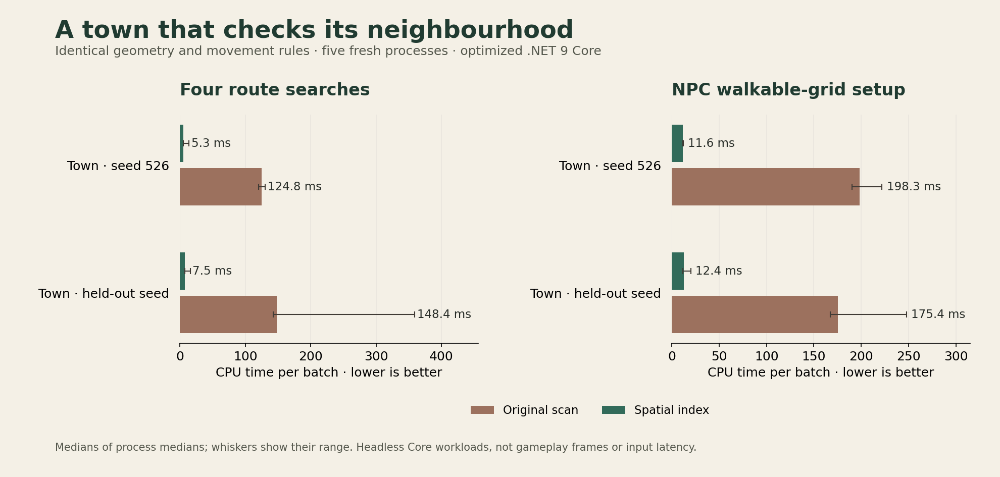

Room for a living town
24 October 2026 · Day 33
Bigger towns need room for more people, shops and stories. This update removes a repeated cost underneath walking and route finding: a small step now checks nearby walls and furniture, with the same movement rules as before.
A footstep was asking the whole town
Imagine walking past the inn. The wall beside your shoulder matters. A bed inside a house at the other end of the settlement does not need a detailed collision test for that step.
Sprawl's flat-town collision system was checking both. Every enquiry scanned the town's complete collection of building walls, furniture and boundary walls. A route search asks whether thousands of little steps are possible. Preparing the ground that villagers can walk on asks thousands more questions. Each question repeated much of the same unnecessary work.
That cost becomes more painful as a place grows. Adding a distant house could make a local movement check more expensive even when the traveller never approached it.
Keeping the rules, finding less to check
The town now builds a small hierarchy of bounds around its solid geometry. A movement enquiry can skip whole groups of distant objects and reach the nearby candidates quickly. The existing collision calculations still decide whether those candidates actually block the traveller.
Long steps examine the space swept by the whole movement. Diagonal boundary walls retain their rounded ends. Wide bodies still need their full clearance. Reaching a corner still produces the same slide along the wall, including the awkward case where two walls are touched at exactly the same moment.
The hierarchy belongs to its town plan. Loading or rebuilding a plan creates the matching hierarchy; nothing extra is written into the saved geometry. Tiny collections keep a simple scan. Queries borrow no shared search buffers and allocate no temporary managed storage.
What the measurements show
The comparison uses the original collision calculations and the new implementation on identical generated town geometry, repeated across five fresh processes. One town uses the development seed; another uses a different seed to check the result across layouts.

In the first town, a batch of four plan route searches fell from 124.8 milliseconds to 5.3 milliseconds. Preparing the villagers' walkable grid fell from 198.3 milliseconds to 11.6 milliseconds. The second town showed the same direction of improvement: 148.4 to 7.5 milliseconds for the searches, and 175.4 to 12.4 milliseconds for the grid.
These are measurements of specific Core CPU workloads. A complete player click also passes through the game's inn, terrain, input and presentation systems. Frame rate and complete loading time need their own measurements. The raw results retain the slow samples as well as the medians.
The index for the first town retains about five kilobytes of node data. Its measured construction took roughly three hundredths of a millisecond. The much larger stress fixture is explicitly synthetic; it checks how the mechanism scales without pretending that a laboratory arrangement is a finished city.
The same streets, with room to grow
The old collision implementation remains a reference for the tests. Generated settlements, narrow doors, furnishings, slanted boundaries, long movements and simultaneous corner hits are compared against it. Saved plans are checked for identical contents, and concurrent readers are checked for identical movement results.
This lays useful groundwork for a busier world. Villagers can prepare their routes with less repeated geometry work, and the same collision service underneath player movement has less to examine. The next navigation improvements can build on that shared foundation while the existing walls keep doing their job.